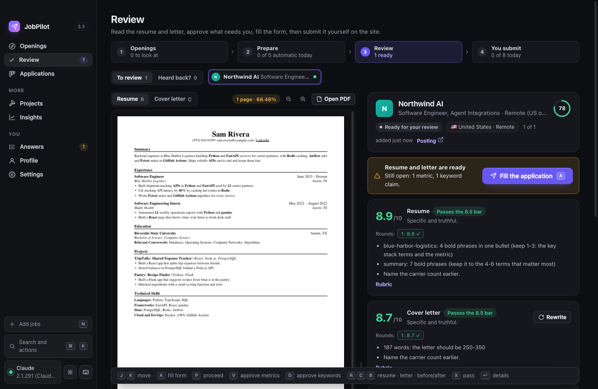
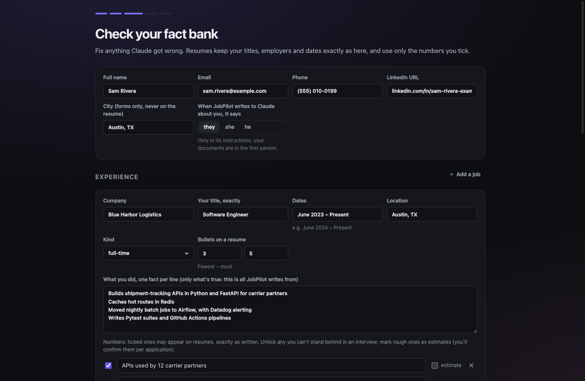
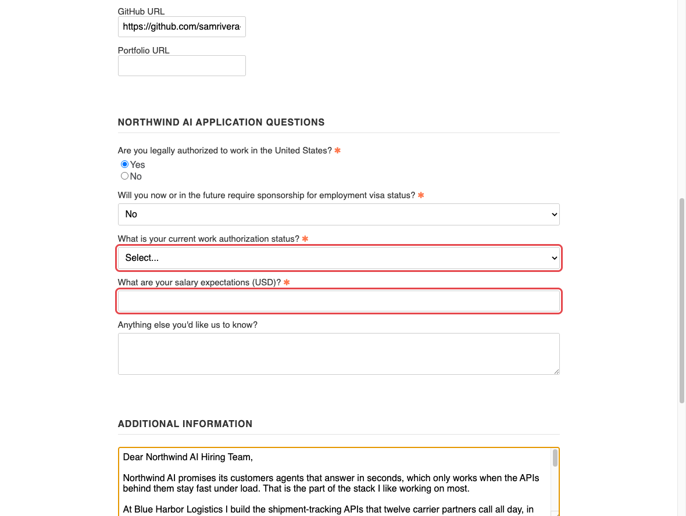
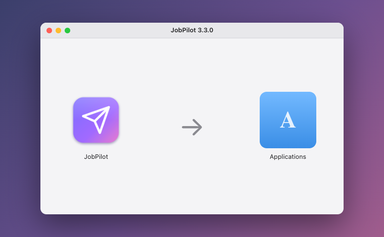
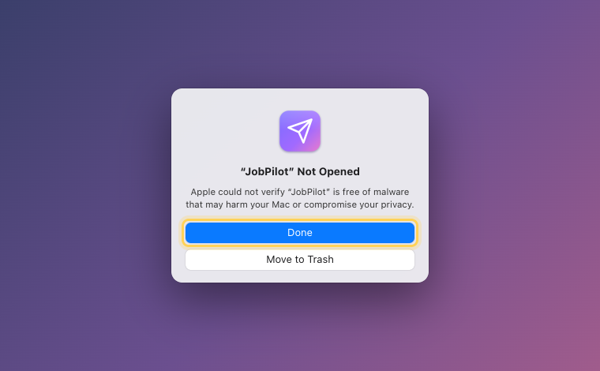
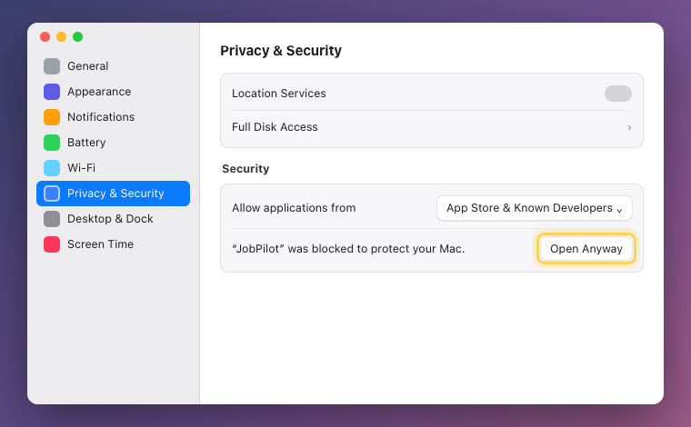
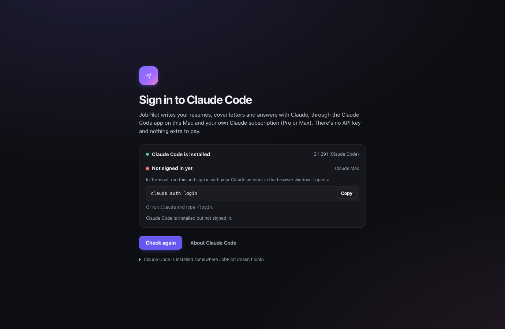

Tailored applications, written from your real experience.
Paste a job link. JobPilot checks whether you fit, writes a one-page resume and a cover letter for that job from your own facts, fills in the application, and stops so you can read it and press Submit yourself.

From a job link to a ready application
JobPilot does the slow parts of applying, from the facts you give it once. It runs on your Mac and writes with Claude through your own Claude subscription.
Reads the posting
Greenhouse, Lever, Ashby and Workday postings, or any job link. It pulls out the requirements, the stack and where the job is.
Checks your fit first
Graduation windows, years of experience, seniority, and whether you can work in the job's country. A mismatch waits for your OK.
Writes the resume
A one-page PDF for that job: your real titles, employers and dates, your own numbers, the posting's language where your facts back it.
Writes the cover letter
Five short paragraphs about their product and your proof, then a strict recruiter-style critique and a revision before you see it.
Fills the form
Contact details, uploads, your saved answers for that country, and drafted answers you check (amber) before anything is sent.
Watches companies
Pick companies; JobPilot checks their job boards every few hours and lists new postings that match your titles and places.
Set up once, from your current resume
Drop your resume (PDF or Word). Claude reads it into a fact bank: every job, title, date, fact and number. You check each line before anything is written from it, untick numbers you can't stand behind, and mark rough ones as estimates.
Then tell it where you can work (work authorization and sponsorship are always yours to enter, never guessed) and which companies to watch. About five minutes.


The review-first promise
- Nothing is submitted for you. JobPilot fills a form and stops. You read it and press Submit on the site.
- Nothing is invented. No employers, dates or titles you didn't have; no level words added; only your numbers. A number you marked as an estimate needs your OK on every application.
- Legal questions are yours. Work authorization, sponsorship, self-identification and pay come only from what you enter. Consent boxes, certifications and signatures are never touched.
- No shortcuts. No LinkedIn automation, no CAPTCHA solving, no mass-applying.
Download
Free. Pick the one for your Mac: Apple menu → About This Mac → Chip says Apple M1, M2, M3, M4… (Apple silicon) or Processor says Intel.
Version 3.3.0 · all releases and checksums · Windows isn't available yet.
What you need
Apple silicon or Intel.
JobPilot writes with Claude on your plan. There's no API key and nothing billed per use.
In Terminal:
curl -fsSL https://claude.ai/install.sh | bash, then claude auth login. JobPilot checks this when it opens and shows these steps if it's missing.The resume PDFs are built with Python. If macOS offers to install the command line developer tools the first time, say yes (or run
xcode-select --install).Install (and the one-time security step)
JobPilot isn't notarized by Apple (that needs a paid developer account), so the first time you open it macOS asks you to confirm. You do this once; after that it opens like any app.
1. Open the download and drag JobPilot to Applications
Double-click JobPilot-mac-….dmg, then drag the JobPilot icon onto the Applications folder.

2. Open it once, then click Done
Double-click JobPilot in Applications. macOS says it couldn't verify the app. Click Done (not Move to Trash).

3. System Settings → Privacy & Security → Open Anyway
Open → System Settings → Privacy & Security, scroll down to Security, and next to “JobPilot was blocked to protect your Mac” click Open Anyway. Enter your Mac password, then click Open Anyway once more.
On macOS 14 and earlier you can instead Control-click (right-click) JobPilot in Applications, choose Open, then Open.

4. Sign in to Claude Code, then set up
If Claude Code isn't installed or signed in, JobPilot shows exactly what to run. Then it walks you through your resume, where you can work, and the companies to watch.

Prefer Terminal? After dragging it to Applications, this clears the download flag so macOS doesn't ask: xattr -dr com.apple.quarantine /Applications/JobPilot.app. Only do this for apps you trust, and check the SHA-256 first: shasum -a 256 ~/Downloads/JobPilot-mac-*.dmg.
Questions
Where does my data go?
Everything stays on your Mac, in ~/Library/Application Support/JobPilot: your profile, answers, resumes, letters and applications. There's no JobPilot server, account or analytics. To write, JobPilot sends the relevant facts and the posting to Claude through Claude Code on your Mac, under your own Claude account and Anthropic's terms, the same as when you use Claude yourself. Job boards are read from their public APIs.
Does it apply to jobs for me?
No. It prepares each application and fills the form, then stops. You read every field (anything it drafted is highlighted), answer legal acknowledgements yourself, and press Submit on the company's site.
Will it make things up on my resume?
No. Titles, employers and dates are printed exactly as in your profile, numbers only as you wrote them, and a skill your facts don't back is flagged for you to confirm or remove. If a posting asks for something you don't have, it shows up as a gap, not as a claim.
What does it cost?
JobPilot is free. Its writing uses your Claude subscription's usage, like chatting with Claude does. A Pro plan is enough for a few applications a day; Max gives more room.
Why does macOS warn me when I first open it?
Apple notarization needs a paid developer account, which this hobby project doesn't have. The app is signed (ad hoc) but not notarized, so macOS asks you to confirm once. You can check the download against the SHA-256 on the release page.
Which job sites work?
Greenhouse, Lever, Ashby and Workday forms are filled directly; other sites get a generic fill you check. Postings from any site can be read by pasting the link (or the text). Company watching works for Greenhouse, Lever and Ashby boards.
Windows? Updates?
Mac only for now. To update, download the new version here and replace the app in Applications; your data stays where it is.
How do I remove it?
Drag JobPilot from Applications to the Trash. To remove your data too, delete ~/Library/Application Support/JobPilot.